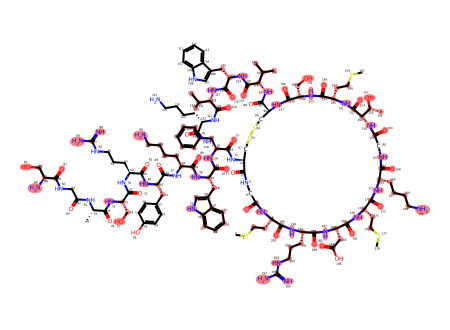
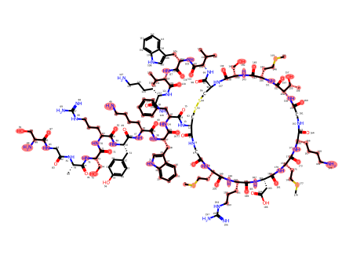
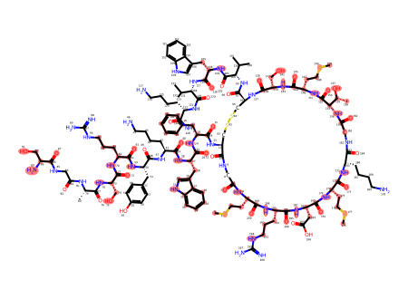
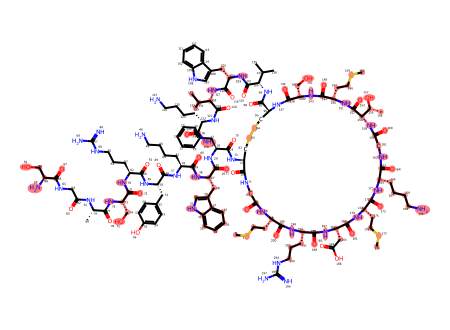
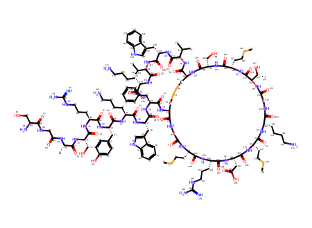
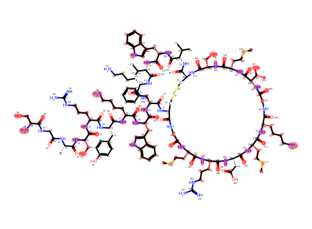
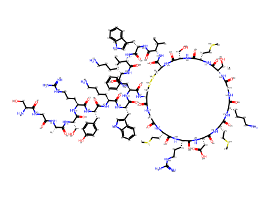

P(positive)=0.9979


P(positive)=0.9992


P(positive)=0.9998


P(positive)=0.9997


P(positive)=0.9987


CSCC[C@@H]1NC(=O)CNC(=O)[C@@H](NC(=O)[C@H](Cc2ccccc2)NC(=O)[C@H](Cc2c[nH]c3ccccc23)NC(=O)[C@H](CCCCN)NC(=O)[C@H](Cc2ccc(O)cc2)NC(=O)[C@H](CCCNC(=N)N)NC(=O)[C@H](CO)NC(=O)[C@H](C)NC(=O)CNC(=O)[C@@H](N)CO)CSSC[C@@H](C(=O)N[C@H](C(=O)N[C@@H](Cc2c[nH]c3ccccc23)C(=O)N[C@H](C(=O)N[C@@H](CCCCN)C(N)=O)C(C)C)C(C)C)NC(=O)[C@H](CO)NC(=O)[C@H](CCSC)NC(=O)[C@H]([C@@H](C)O)NC(=O)CNC(=O)[C@H](CCCCN)NC(=O)[C@H](CCSC)NC(=O)[C@H](CC(=O)O)NC(=O)[C@H](CCCNC(=N)N)NC1=O

Highlights show eligible boundary bonds and selected atoms/bonds on the original molecule. Unhighlighted structure is context, not selected input. Scores and exact masks are in trace.json. Own-view mean P(positive): 0.9991. Sampling-demo freezes dropout/BatchNorm; it is not normal inference.
| View | Eligible boundary bonds | Selected atom graph highlighted |
|---|---|---|
| View 1 P(positive)=0.9979 | |  |
| View 2 P(positive)=0.9992 | |  |
| View 3 P(positive)=0.9998 | |  |
| View 4 P(positive)=0.9997 | |  |
| View 5 P(positive)=0.9987 |  |  |